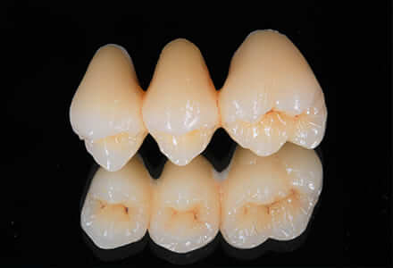
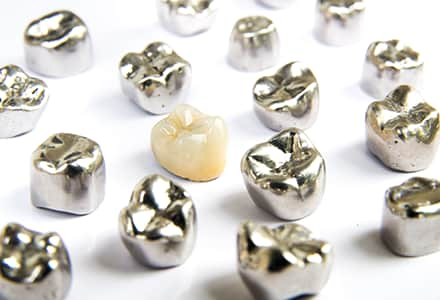
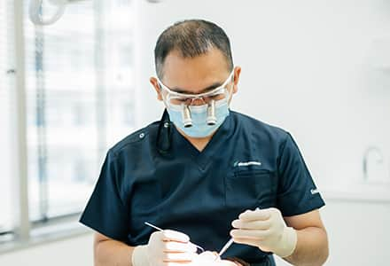
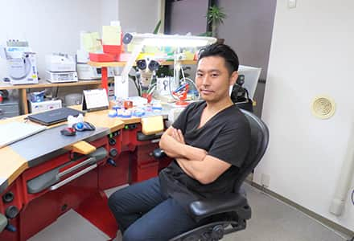
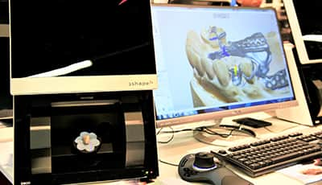
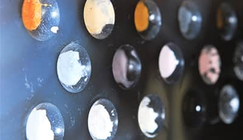
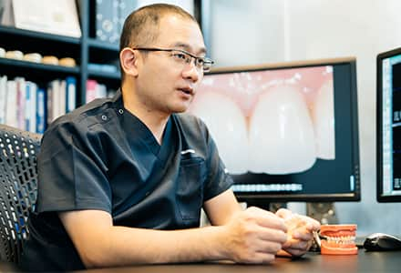
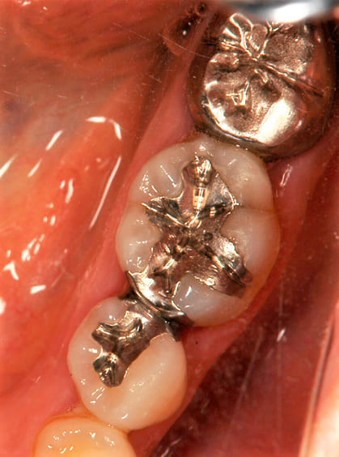
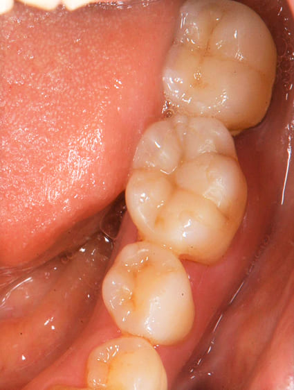

確かなクオリティで虫歯の再発を防ぐ―セラミック治療

藤沢の歯医者、玉木歯科医院では、歯との接着性の良さ、歯垢の付きにくさ、金属アレルギーが発症しないことなどから、セラミック治療をおすすめしております。セラミック治療で使われる詰め物は、まるで天然の歯のように自然で綺麗な色に仕上がるだけでなく、銀歯に比べて性能が高い治療方法です。
虫歯が再発しやすい銀歯の真実

日本では銀歯を装着している患者様が非常に多いのですが、日本以外の歯科先進国では銀歯を用いて治療する国はほぼありません。海外では虫歯の詰め物や被せ物に金属を使うことはなく、子供や妊婦には使用を禁止している国もあります。
銀歯を装着されている患者様の多くは、銀歯の下の虫歯が再発しています。保険診療では一度の診療にかけられる時間が限られ、さらに保険診療で使用する材料は精度が著しく低いため、歯との適合が悪く銀歯と銀歯を被せている歯の間に隙間ができやすいのです。さらに時間が経つとセメントが唾液で溶解してしまうことも、銀歯の下で虫歯が進行する原因に挙げられます。
再発のない健康的な歯を維持するために

虫歯の再発を防ぐためには、まずしっかりと虫歯を除去することです。また、歯ぐきの炎症を抑える、歯周病の治療をするなど、歯周組織の環境を整えておくことも必要です。歯周病治療をしないまま、セラミック治療を進めてしまうと歯肉からの出血により正確な型採りができず、完成した被せ物が歯や口腔内に合わない場合があります。ステップを省略せずに、きちんとルールを遵守した治療を行うことが重要になります。
そのため、当院では自費診療で時間をかけた治療を行うことを推奨しております。一つ一つの工程を丁寧に行い、歯とかぶせ物・詰め物の隙間を無くすことで汚れが溜まることを防ぎ、再発のリスクを減らすことができます。
歯周病指導医がセラミック治療をする優位性
セラミック治療は、「歯の色」「歯の形」「歯並び」を綺麗にする治療と認識されていることが多いですが、口元を綺麗にするためには「健康で美しい歯肉」も重要なポイントになります。歯の色や形が綺麗でも、それを支える歯周組織の炎症がコントロールされてなかったり、歯肉ラインが整っていないと歯の形も不揃いになってしまうため、歯肉ラインの整備なくして美しい口もとは実現できないのです。そのため、歯肉について豊富な知識と技術を持っている歯周病指導医が行うセラミック治療は、得意分野のひとつといえます。ゴールに向かっての的確な治療計画を立て、歯肉を良好な状態に整えることからセラミック治療を始めることで、健康的で美しい口元の実現をサポートできるのです。
当院の院長は、日本歯周病学会指導医として歯周病治療の豊富な知識と技術を有しており、さらに補綴治療にも精通しておいます。各学会で審美修復治療の発表を多数を行っており、高い評価を得ています。日本歯周病学会指導医として、口腔内全体を診て歯周病のリスクや進行状況、二次う蝕、歯肉退縮などを考慮した上でセラミック治療を行います。
審美修復治療に関する学会発表
【2019年11月】
歯周炎患者の欠損補綴にインプラント治療を用いて包括的診療を行った一症例．日本歯科審美学会第30回学術大会
【2018年9月】
オールセラミックスクラウンと歯肉弁根尖側移動術を用いて審美的改善を図った一症例．日本歯科審美学会第29回学術大会
【2018年6月】
美しい口腔内規格写真を撮影するために知るべき傾向と対策．日本顎咬合学会第36回学術大会
【2017年6月】
歯冠長延長術とプレスセラミックスを用いて審美的改善を行った一症例．日本顎咬合学会第35回学術大会
玉木歯科医院のセラミック治療の特徴
高い精度を追求するため、優秀な技工士と連携

あまり知られていませんが、被せ物・詰め物は歯科技工士と連携し作られているため、どの技工所・技工士と連携しているかでその良し悪しが決まります。当院では、国内トップレベルの技術を持つ、株式会社プロミネント代表 小見川淳氏と連携し、被せ物・詰め物を製作しております。信頼できる技術と豊富な知識・経験から更なるクオリティのものを完成させるため、こちらの意図を理解し寄り添ったご提案をしてくださるプロフェッショナルです。
当院の扱う歯の被せ物や入れ歯などは、一から時間と手間をかけこだわりをもって作っており、高いクオリティと価値のあるもののみをご提供しています。
適合精度を向上させるためのこだわり
 
技工物は、大手の技工所ですと一般的に流れ作業で各工程を分担して製作するため、スキルの高い技工士がいたとしても最終工程の築盛（セラミックス表面の仕上げ）など一部しか携わりません。しかし、小見川氏は、一から全工程を担当しているため、ミスのない精度の高い技工物を製作することができます。
また多数歯に渡るケースや色調再現が難しい前歯の治療では、術前のシミュレーションから診断と治療計画の立案、仮歯の製作、試適の段階にも立ち会い、患者様の好み・口腔内環境を理解した上でお口にフィットした補綴物をご提供するようにしています。数字や図面だけでの確認と、直接歯や歯肉の状態を診て製作するのとでは、仕上がりに大きな差が生まれます。
書籍（論文）
【2016年2月20日】
ジルコニアを用いたセラミックスレストレーション
日本歯技 (Journal of the Japan Dental Technologists Association) 号：561ページ：1-8
【2015年10月10日】
Initial MCを用いたmetal ceramics-新オペーク陶材とリカバリー陶材「CST」-
QDT Art & Practice (QDT Art & Practice) 巻：40 号：10ページ：1472-1485
【2012年10月10日】
ONEBODY CONCEPTによる築盛テクニック
QDT Art & Practice (QDT Art & Practice) 巻：37号：10ページ：1280-1302
【2008年10月15日】
新しいコーティング材「ナノコートカラー」を用いた臨床
歯界展望 (月刊歯界展望)巻：112号：4ページ：663-669
【2008年4月01日】
ファイバー補強の臨床・技工における材料選択基準と技工操作-ファイバーによる補綴物補強の基礎知識・臨床手技から最新の研究・トピックスまで-第7回 ファイバー補強型補綴物製作の基礎手技について 月刊歯科技工 (歯科技工) 巻：36号：4ページ：458-464
見た目・機能性共に精度の高い技工物をご提供

当院では、型採りの材料や、被せ物・詰め物の装着に用いる接着剤など、必要な材料はすべて最高品質のものを使用し、精度の高い補綴治療を提供しています。しっかりと噛める機能性だけでなく、患者様ご自身の他の歯の色や形と調和のとれたきれいな見た目にもこだわり、審美性・機能性どちらも優れた治療を行っています。
治療例
| 治療前 |
|---|
|  |
| 治療後 |
|---|
|  |
| 患者様からの主訴 | 銀歯が目立つのが気になるとご来院。 |
|---|---|
| 治療方針 | 適合や接着性・審美性が悪いだけではなく全身の健康に悪影響を及ぼすとされている銀歯を除去し、取り残されていた虫歯を除去後、セラミックスインレー、オールセラミックスクラウン（プレスセラミックス）で審美修復を行う。 |
| 治療期間 | 1ヶ月 |
| 治療費（税込） | 24.2万円（インレー6.6万円×2、クラウン11万円×1） |
| 治療におけるリスク | 特に無し |
料金表
| セラミックインレー | ¥66,000～¥88,000 |
|---|---|
| セラミックアンレー | ¥88,000～¥110,000 |
|
オールセラミッククラウン （プレスセラミック）臼歯用 |
¥110,000～¥165,000 |
| フルジルコニアクラウン 臼歯用 | ¥110,000～¥165,000 |
|
ジルコニアクラウン （レイヤリング）前歯用 |
¥165,000～¥253,000 |
※すべて税込
✼ セラミック治療のメリット
金属を使わないため自然な仕上がりとなります。また金属アレルギーの心配もありません。
✼ セラミック治療のデメリット
自由診療のため保険診療と比べて治療時間が長くなることがあります。
✼ セラミック治療の注意点
噛む力が強い方、就寝時にナイトガード（マウスピース）を使用してくださらない場合は欠ける場合や外れる場合があります。